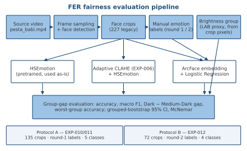
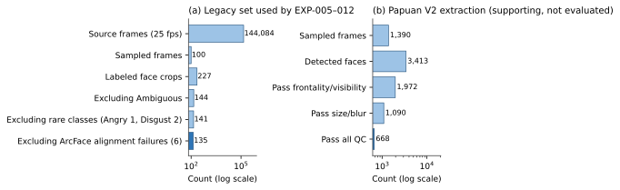
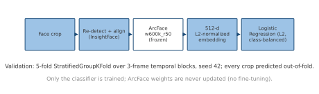
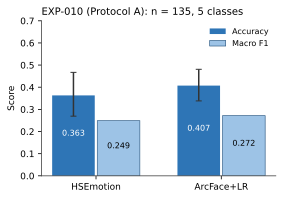
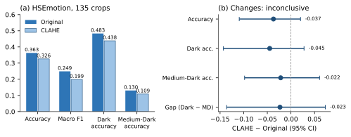
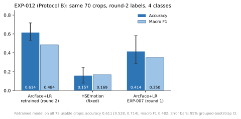
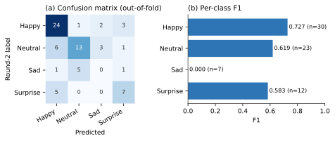
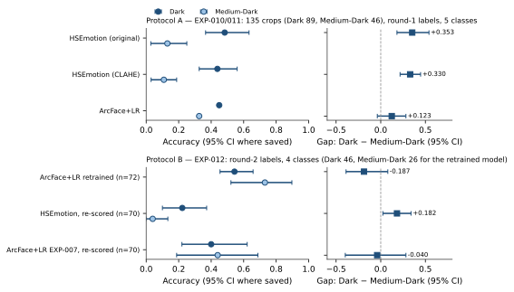
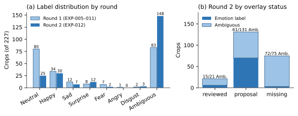
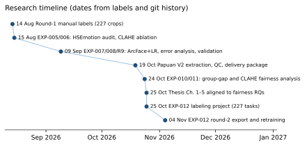

FER Thesis — Research Tracking
Fairness evaluation of facial expression recognition across Dark and Medium-Dark skin-brightness groups (one documentary film). All figures are generated from saved experiment outputs; see README.md for sources and regeneration. Status as of 4 Nov 2026.
Evaluation protocols
| Protocol A — EXP-010 / EXP-011 | Protocol B — EXP-012 | |
|---|---|---|
| Crops | 135 | 72 usable (70 for same-crop comparison) |
| Labels | Round 1 | Round 2 (manual relabel, landmarks as visual aid) |
| Classes | 5 | 4 (Fear, Disgust too rare) |
| Dark / Medium-Dark | 89 / 46 | 46 / 26 |
Results from the two protocols are not directly comparable.
Key numbers
EXP-010 · HSEmotion gap
0.353
Dark − Medium-Dark accuracy, 95% CI [0.182, 0.540]
EXP-010 · ArcFace+LR gap
0.123
95% CI [−0.038, 0.282] — suggestive, not established
EXP-011 · CLAHE gap change
−0.023
95% CI [−0.136, 0.073] — inconclusive
EXP-012 · retrained ArcFace+LR
0.611
Accuracy [0.528, 0.714], macro F1 0.482, 72 crops, 4 classes; gap −0.187 [−0.388, 0.079]
Timeline and milestones
- 14 Aug 2026Round-1 manual labels for 227 legacy crops
- 15 Aug 2026EXP-005 HSEmotion audit; EXP-006 adaptive CLAHE ablation
- 09 Sep 2026EXP-007 ArcFace+LR vs HSEmotion; EXP-008 error analysis; R9 validation
- 19 Oct 2026Papuan V2 extraction, QC, and supervisor delivery package (supporting)
- 24 Oct 2026EXP-010 group-gap analysis; EXP-011 CLAHE group analysis
- 25 Oct 2026Thesis Chapters 1–5, title, abstracts aligned to fairness RQs; citations verified
- 25 Oct 2026EXP-012 Label Studio project (227 tasks, landmark overlays)
- 04 Nov 2026EXP-012 round-2 labels exported; ArcFace+LR retrained and evaluated
- NextIntegrate EXP-012 into the thesis as a sensitivity analysis
Current findings
- HSEmotion is about 35 points less accurate on Medium-Dark than Dark crops (Protocol A); the interval excludes zero.
- The tested CLAHE configuration did not measurably change the gap.
- ArcFace+LR shows a smaller gap in Protocol A, but the evidence depends on the grouping used.
- With round-2 labels, 148 of 227 crops are Ambiguous; the retrained model's gap is not distinguishable from zero, and Sad is not recognized.
- Most of EXP-012's accuracy gain reflects the new labels and the 4-class task, not a better model.
Limitations
- Brightness is a pixel-based proxy mixed with lighting; only two dark groups; no light-skin evaluation.
- Small groups (Medium-Dark 46 in Protocol A, 26 in Protocol B); per-class group results not interpretable.
- One film; single annotator in both rounds; no subject IDs, so repeated people may cross folds.
- Analyses after the fact; uncorrected multiple comparisons.
- Source-film consent and provenance unresolved — face figures are internal only.
Remaining thesis work
- Integrate EXP-012 (methods, results, limitations) into Chapters 3–5 as a separate protocol.
- Supervisor approval of the RQ wording and title; record in
RESEARCH_DECISIONS.md. - Resolve consent/provenance; anonymize or replace face figures for publication.
- Front matter: declaration, approval date, abbreviation pages, acknowledgements; expand abstracts to 500–800 words.
- Verify the 5 pending citations and Zuiderveld's page range; apply the ITB citation style.
Figure inventory












Mermaid sources: mermaid/research_flowchart.mmd, mermaid/experiment_workflow.mmd, mermaid/annotation_evaluation_workflow.mmd.